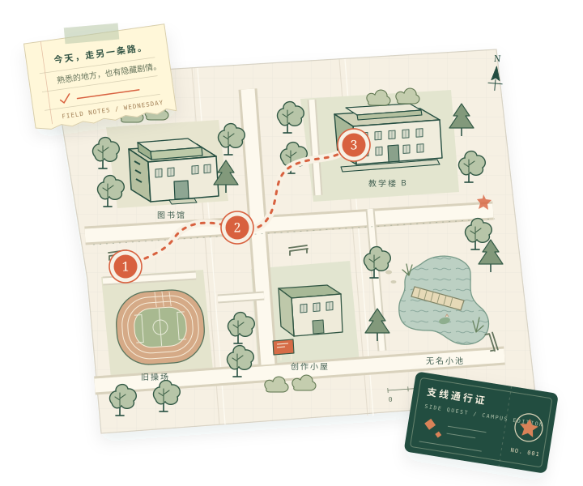
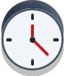

教学楼、食堂、宿舍，和昨天一样。但如果，今天还有一条没被发现的支线呢？

同学，你好：
很抱歉，今天的星期三误用了上周的副本。
课表、铃声和便利店的饭团都复制成功了。只有“你亲眼看见的事”，无法自动补齐。
三处小小的不同，让今天成为一份原件。
不需要破解密码，也不用走很远。抬头看一会儿，故事就会开始。

一个人，一部手机，几分钟。坐在自己的座位上也能完成。
写下一句话，或留一张照片。没有标准答案，也不需要打分。
你的观察会走进故事和结局。把小册子保存下来，留给自己。
照片和笔记只保存在你正在使用的浏览器里。无需账号，不读取定位；你可以随时清除旅程。
剧情中的校园日历室与时间异常属于虚构。你可以在正常开放的公共空间、自己的座位或家中完成；不需要证明位置，也不必与陌生人互动。
你的称呼、笔记、选择与压缩后的可选照片，只保存在当前浏览器。我们没有上传照片、跨设备同步或公开个人手册的功能。清除浏览器数据或更换设备后，记录可能丢失，请下载小册子留存。
可选照片在本机缩小并重新编码后保存。下载的手册可能含有你的照片与文字，请自行选择分享对象。
这会清除本浏览器里现有的笔记、照片和选择。已经下载的小册子不受影响。